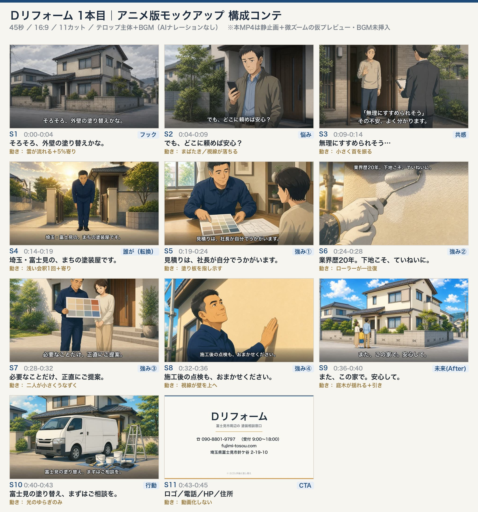

鈴木さん確認用 ／ 2026-08-04 ／ 営業：株式会社ランバード ／ ディレクション 8/4(火) 15:00 ・審査期限 10/20
※ 現在いずれも BGM未挿入（無音）／本番動画化前（静止画＋微ズームの仮プレビュー）／ロゴ未入手 の状態です。詳細は最下部「未了」参照。
1920×1080 ／ 15.00秒 ／ 8カット ／ 無音
| # | 尺 | 5要素 | テロップ |
|---|---|---|---|
| 1 | 0.0-2.0 | ①理想の姿Who/What | 10年後も、きれいな我が家。 埼玉・富士見の外壁塗装 |
| 2 | 2.0-4.0 | ②悩みの共感 | うちの壁、そろそろかな。 |
| 3 | 4.0-5.5 | ②悩みの共感 | でも、どこに頼めば安心？ |
| 4 | 5.5-7.5 | ③解決方法 | 見にくるのは、社長本人です。 |
| 5 | 7.5-9.5 | ④根拠（シズル） | 10年後を決めるのは、下地。 |
| 6 | 9.5-11.0 | ④根拠 | 納得いくまで、色を選べる。 |
| 7 | 11.0-12.5 | ④根拠 | 業界歴、20年。 |
| 8 | 12.5-15.0 | ⑤オファー | お電話1本で、社長がうかがいます。 ☎090-8801-9797 ／ fujimi-tosou.com ／ 富士見市針ケ谷2-19-10 |
1920×1080 ／ 45.00秒 ／ 18カット ／ 無音 ／ 15秒版と同じ5要素順
仲野メソッドに組み替える前の版です。冒頭が「悩み」から始まり、1カット4〜5秒でした。比較用に残しています。
1920×1080 ／ 45.00秒 ／ 11カット ／ 無音

| # | 項目 | 判定 | 根拠 |
|---|---|---|---|
| ① | 動画の主役 | ◯ | 社長（アニメキャラの塗装会社社長）。受注シート訴求軸「社長の人柄／社長自ら見積りに行く」 |
| ② | お客様のイメージ | ◯ | 持ち家の40〜50代夫婦＋子ども・埼玉郊外の戸建て。受注シート「持ち家でリフォームに関心がある層」 |
| ③ | ターゲット | ◯ | ネットリテラシー低め・物腰柔らかい層 → テロップ大きめ・1行完結・平易な言葉 |
| ④ | ゴール | ◯ | 認知度拡大。ラストで電話・HP・住所へ誘導 |
| 項目 | 判断 | 理由 |
|---|---|---|
| 緊急性オファー （「梅雨前に」等） | 不使用 | 不安を煽る訴求は、悪徳業者の手口と同じ記号になる |
| お得感オファー （「無料点検」「％OFF」） | 不使用 | 「突然の訪問＋無料点検」は業界で悪徳業者の典型手口として周知。0円表記NGルールにも該当 |
| 限定感 | 採用 | 「見にくるのは、社長本人」＝大手・訪問営業との明確な差。景表法リスクなし |
| 他社を貶める表現 | 不使用 | S3の営業マンは後ろ姿・顔なし・悪役化なしに固定（YouTube審査対策） |
| 効果保証の断定 （「必ず長持ち」等） | 不使用 | 景表法。HPの「10年後の美しさを決める下地処理」の範囲に留める |
※ 実写風の設計も残してあります。ご希望なら実写風パターンも出せます。
| 項目 | 状態 | 対応 |
|---|---|---|
| BGM | 未挿入（無音） | トーン確定後に載せます（想定：穏やかで温かいアコースティック／ピアノ系） |
| 本番動画化 | 未実施 | 現状は静止画＋微ズームの仮プレビュー。Lovartで10カットを動画化すれば同じ構成のまま本番化できます（指示書作成済み） |
| ロゴ | 未入手 | エンドカードは仮組み。土井様 or HP制作会社様からいただければ差し替え |
| 「業界歴20年」の裏取り | 要確認 | HP記載からの引用。ディレクションで一度ご確認をおすすめします |
受託事業/クライアント/RUNBIRD/AI動画事業/案件/Dリフォーム/